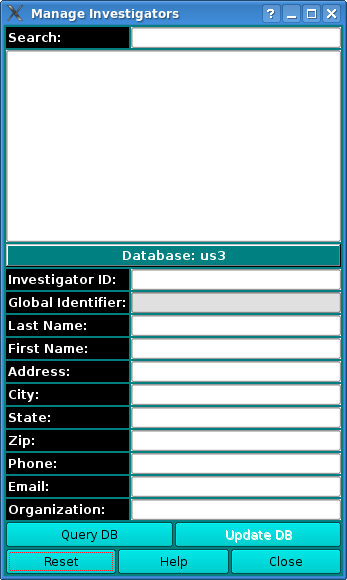
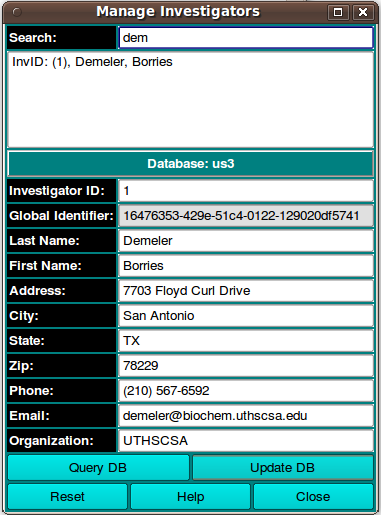

Managing Personal Information:

Using this window, you can update any personal information. Your
database authorizations must allow update privileges for the record
being changed.
- Use Query DB to get a list of persons in the current database.
- Entering text in the Search window narrows the number of
entries visible in the list of personnel available for selection.
- Double-clicking on the name of the investigator will populate
the line edit windows to allow viewing and changing personal data.
- Change any data desired.
- Use Update DB to commit the changes to the database.
- Use Accept to pass information back to the calling program and
close this dialog or Cancel to simply close without changing the
investigator data of the caller.
Note: Depending upon how the window is initiated, the Cancel
button may be labelled Close with no Accept button present.

 Manual
Manual